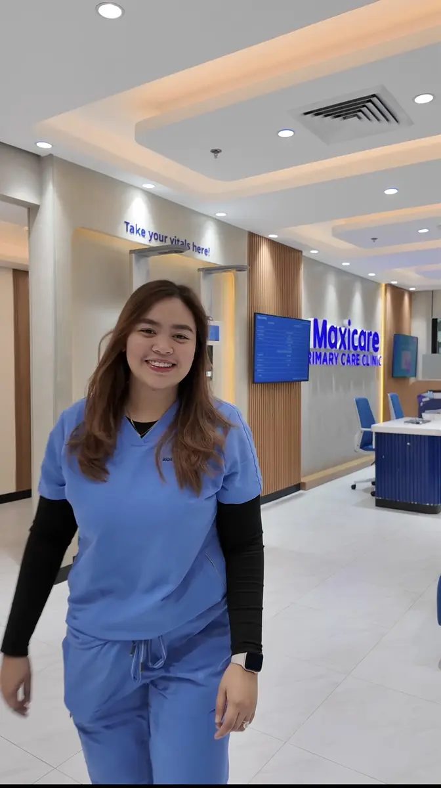
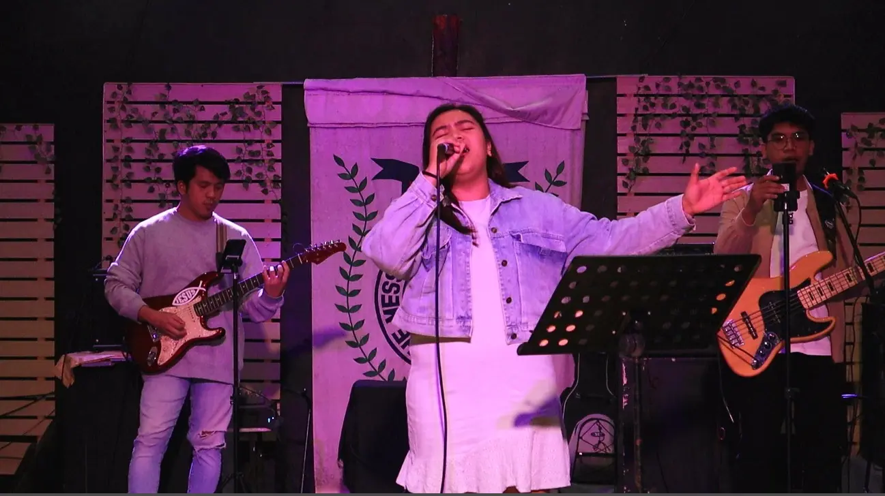
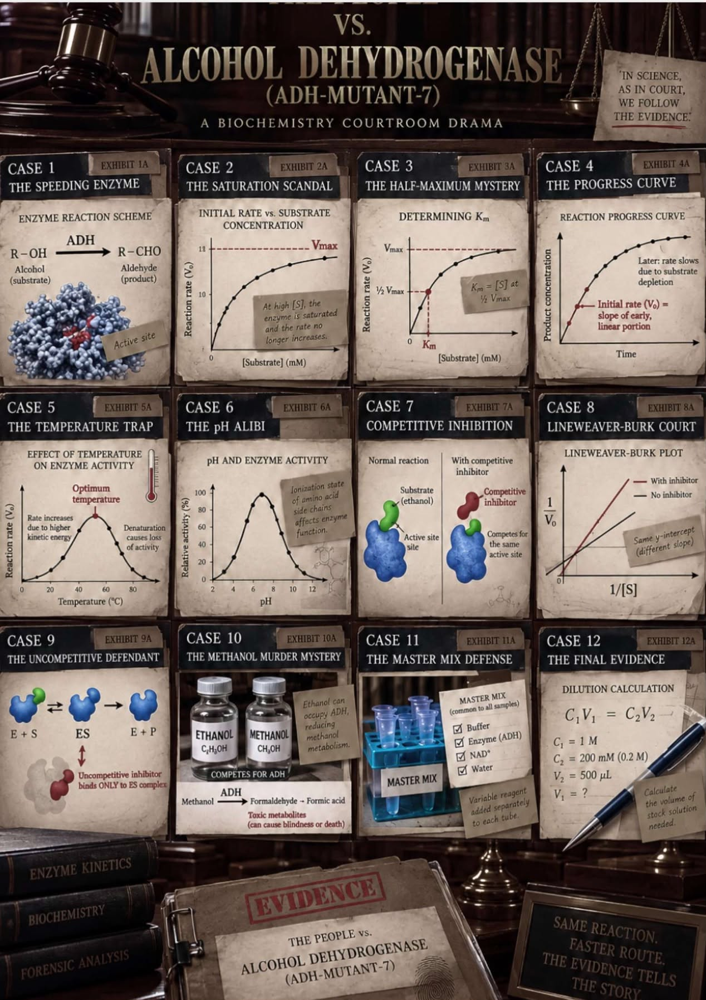
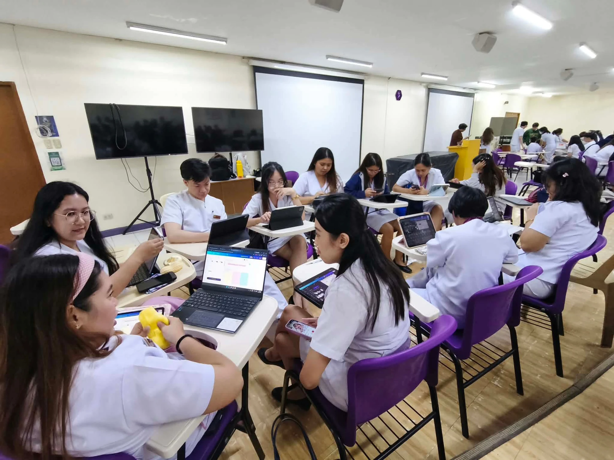
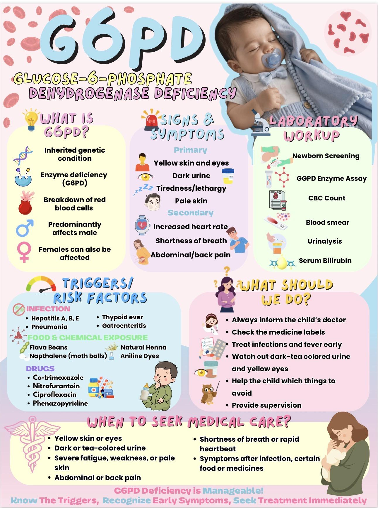
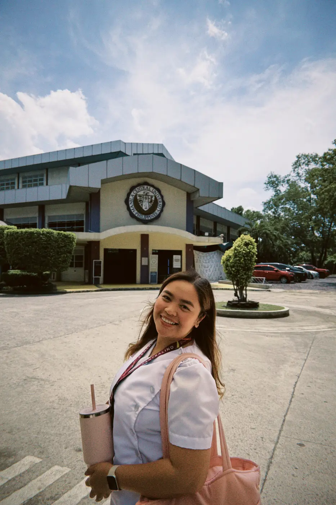

Jesus the Heart of God Christian Academy
Preschool


Registered Nurse · MD-1
Biochemistry · Learning Portfolio 2026
Understanding life at the molecular level,
caring for it at the human level.
Nurse · Student · Wife · Storyteller
The science of care,
seen through many roles.
Care in every chapter
Hi, I’m JJ, a registered nurse, a first-year medical student, and a wife.
My journey in healthcare has always been rooted in my desire to learn, serve, and care for others. As I continue toward becoming a physician, I am learning to balance the demands of medicine with the many roles and experiences that make me who I am.
Beyond healthcare and academics, I create mini-vlogs to keep little pieces of life that I can return to someday. For me, vlogging is not about perfect content. It is about preserving memories, documenting growth, and appreciating ordinary moments.
The path so far
Preschool
Grade School
Junior Business High School · Molino Campus
Special Health Science Senior High School
De La Salle Medical and Health Sciences Institute
Manila Central University
Three expressions of service


01 / 03Working as a Clinic Nurse helped me become more patient, responsible, and attentive when caring for people in different healthcare situations. Beyond strengthening my nursing practice, the experience reinforced the value of compassion, communication, and treating every patient with respect. It prepared me for medical school and deepened my desire to become a better healthcare professional.
Serving as Royal Matron has taught me that leadership is not only about guiding others. It is also about listening, understanding, and serving with compassion and humility. The role continues to shape me into a leader who acts with purpose, integrity, and heart.
Serving as a Worship Leader has brought me closer to God and deepened my understanding of identity and purpose. It has taught me to lead not only through music, but through faith, humility, and genuine service, using the gifts God has given me to honor Him and become a blessing to others.
04 / The learning journal
Choose a volume of my Biochemistry story.
Preliminary period
“Struggling does not mean I am incapable. It means there are still things I am learning to understand.”
Midterm Introduction & Milestones
The first half of this semester has been a massive reality check. Adapting to the grueling pace of first-year medicine meant drastically overhauling my study habits—a soft skill I didn't realize I lacked until I faced the sheer density of Biochemistry. Trying to build a solid foundation in these complex molecular cascades tested my mental endurance daily. However, I’ve learned to embrace the struggle and focus on my resilience. Despite having a very hard time understanding, I'm glad that I am getting somehow better scores than the Prelims. Every point earned on those tough quizzes is a milestone that proves my long hours of reading are actually paying off, no matter how incremental the progress seems.
Chapters Reflection / September — October 2026
I learned the fundamental concept of free energy and how ATP couples reactions. I struggled with calculating the actual delta G values and thermodynamic math. Applying this to daily living, I treat my time and focus like ATP—making sure I only spend it on high-yield tasks that actually push me forward.
I learned about oxygen toxicity and how enzymes manage redox potentials. I struggled with distinguishing the specific roles of peroxidases versus oxygenases. In my daily life, this chapter gives me a literal molecular reason to eat more fruits and vegetables to keep my own oxidative stress in check.
I learned the intricacies of the proton motive force. I struggled to remember the exact sequence of electron carriers and their specific chemical inhibitors. On a practical level, it makes me hyper-aware of my breathing during stressful exams, knowing I need constant oxygen delivery to keep my own tissues functioning.
I learned the structural differences and properties of physiological sugars. I had a difficult time visualizing Haworth projections and identifying anomeric carbons. In daily life, this makes me much more conscious of the glycemic index of my study snacks and how my body handles them.
I learned the amphibolic nature of the TCA cycle as a metabolic crossroad. I heavily struggled with drawing the structures of intermediates like alpha-ketoglutarate. This pathway taught me why starving myself to study is entirely counterproductive to my overall energy yield.
I learned how different organs cooperate during fed and fasting states. I struggled to map out the conflicting anabolic versus catabolic hormones. I apply this now by timing my meals properly around my most intensive study blocks to avoid brain fog.
I learned the processes of glycogenolysis and glycogenesis. I struggled with memorizing the various branching and debranching enzymes. In reality, it gives me a profound appreciation for my liver, which literally sustains my blood sugar through long, grueling 4-hour morning lectures.
I learned the net yield of ATP and pyruvate from a single glucose molecule. I struggled with remembering which kinase and mutase enzymes catalyze the irreversible steps. I think about this pathway every time I experience a sudden energy crash after a sugary coffee binge.
I learned how to navigate a virtual laboratory setting, and I enjoyed doing this so much but I got less than 100% in other experiments and I wanted to repeat it so bad but I still have a lot of things to do. I initially struggled with the interface controls, but the visual, hands-on application was a highly rewarding break from purely reading textbooks.
I learned about ribose synthesis for DNA and RNA. I struggled with the complicated transketolase and transaldolase reactions. Applying this to my life, it helps me appreciate my body's silent cellular repair mechanisms when I am recovering from a tiring, sleep-deprived week.
I learned the Cori cycle and how the body synthesizes glucose from scratch. I struggled with the high energetic cost and the bypass enzymes. As a daily application, I respect my body's extreme physiological measures to keep my brain functioning when I accidentally skip breakfast.
Beyond the textbook
01 / Small group discussion
Taking the reins for the Carbon Monoxide poisoning SGD was entirely out of my comfort zone. It was my very first time to lead a small group discussion, and balancing the flow of ideas among my brilliant peers required a lot of quick thinking, active listening, and preparation. I was incredibly anxious about guiding the case correctly, but successfully navigating the discussion made the pressure totally worth it.
Stepping into that leadership role felt incredibly validating. For the first time, I wasn't just staring at abstract pathways on a screen; I was applying them to a patient's symptoms. Understanding exactly why the cherry-red skin happens at a molecular level made me feel so good because somehow I felt like I can finally understand biochemistry in a clinical setting. It was a profound reminder of the "why" behind all our sleepless nights.
02 / Gamification report
For our gamification report on Enzyme Kinetics, I stepped into the role of a Prosecutor to make the topic interactive. We prepared so much for it—ironing out the mechanics and scripting our parts to make it fun for the class. Unfortunately, because of technical difficulties, the execution was so bad, so Your Honor, nasayangan ako sa pinaghandaan namin since we couldn't show our full potential. But I guess it is what it is; I'm glad we were able to make our classmates happy at least for a short moment, bringing some much-needed laughter into a heavy academic week.

03 / Infographic & reporting
For our G6PD Deficiency reporting, I took on the role of creating our group's infographic. Translating the complex pathophysiology of the Pentose Phosphate Pathway and how its impairment leads to red blood cell hemolysis into a single, visually engaging graphic was a unique challenge. It forced me to step back and truly master the core concepts so I could simplify them effectively without losing the vital medical context. Seeing our final output come together was highly rewarding, as it not only allowed me to contribute my creative skills to the team but also helped me practice breaking down heavy medical information, a soft skill that will be incredibly useful for future patient education.


Five frames, one calling
These photographs hold the moments that shaped how I understand service: showing up prepared, learning beside others, and staying present when knowledge must become action.

Still becoming
Biochemistry may have been one of the most challenging parts of my journey so far, but it has reminded me that every difficult lesson, low score, and moment of doubt is part of becoming the physician I aspire to be.
I still have a great deal to learn, but I will continue showing up, trying again, and trusting the purpose behind this journey.
“Studying the reactions that sustain life, while discovering the purpose that sustains me.”
xoxo, jj ♡
What You Will Carry Forward
As I transition into the next half of the semester, the most crucial lesson I bring with me is the value of adaptability. I realized that my initial study methods weren't invincible, and learning to pivot when the material gets overwhelming is a necessary skill for any future physician. The clinical applications from our SGDs taught me to always look beyond the textbook and remember the human lives attached to these microscopic processes. Furthermore, accepting setbacks gracefully like our gamification technical difficulties has taught me not to take myself too seriously all the time. Ultimately, I will keep pushing forward with patience, knowing that every hard-earned point is slowly building my foundation as a doctor.
xoxo, jj ♡